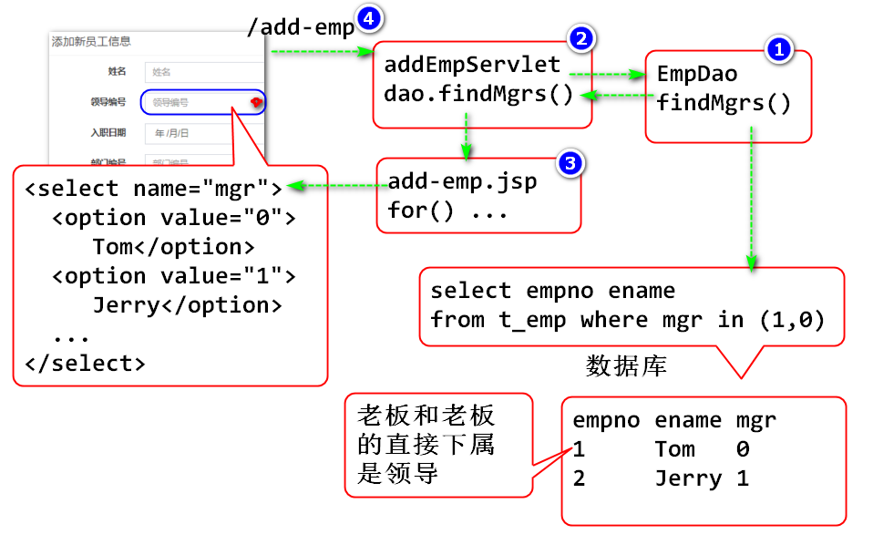
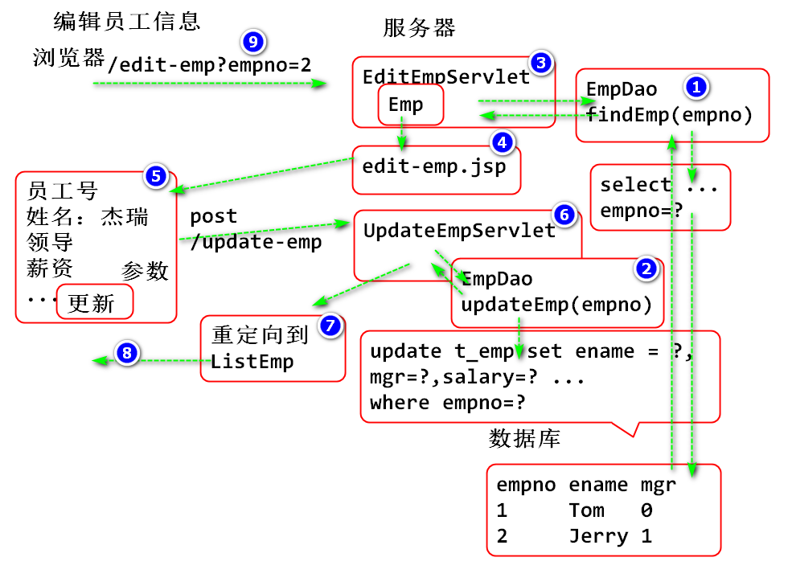

重定向： 服务器向客户端发送状态码 302 并且发送响应头Location，客户端根据状态码和响应头重新请求 Location 指向的URL地址。
更新添加界面，实现“领导”列表，原理为：

步骤:
更新 EmpDao 添加方法查询所有的领导：
/**
* 获取员工中的全部领导
*/
public List<Emp> findMgrs(){
String sql = "select empno, ename, mgr, "
+ "hiredate, deptno, salary, comm "
+ "from t_emp where mgr=0 or mgr=1";
try(Connection conn=DBUtil.getConnection()){
Statement st = conn.createStatement();
ResultSet rs = st.executeQuery(sql);
List<Emp> list=new ArrayList<>();
while(rs.next()) {
//必须是没有编译错误，并且选定的代码块能够抽取为方法！
Emp emp = row2Emp(rs);
list.add(emp);
}
return list;
}catch(Exception e) {
e.printStackTrace();
throw new RuntimeException(e);
}
}
private Emp row2Emp(ResultSet rs) throws SQLException {
int empno = rs.getInt("empno");
String ename = rs.getString("ename");
int mgr = rs.getInt("mgr");
Date hiredate=rs.getDate("hiredate");
int deptno = rs.getInt("deptno");
double salary = rs.getDouble("salary");
double comm = rs.getDouble("comm");
Emp emp = new Emp(empno, ename, mgr, hiredate, deptno, salary, comm);
return emp;
}
测试
@Test
public void testFindMgrs() {
EmpDao dao = new EmpDao();
List<Emp> list = dao.findMgrs();
for (Emp emp : list) {
System.out.println(emp);
}
}
添加 AddEmpServlet
public class AddEmpServlet extends HttpServlet {
private static final long serialVersionUID = 1L;
/**
* URL /add-emp
*/
protected void doGet(
HttpServletRequest request,
HttpServletResponse response)
throws ServletException, IOException {
EmpDao dao = new EmpDao();
List<Emp> mgrs = dao.findMgrs();
request.setAttribute("mgrs", mgrs);
request.getRequestDispatcher(
"/WEB-INF/jsp/add-emp.jsp")
.forward(request, response);
}
}
配置
<servlet>
<description></description>
<display-name>AddEmpServlet</display-name>
<servlet-name>AddEmpServlet</servlet-name>
<servlet-class>day07.AddEmpServlet</servlet-class>
</servlet>
<servlet-mapping>
<servlet-name>AddEmpServlet</servlet-name>
<url-pattern>/add-emp</url-pattern>
</servlet-mapping>
将 add-emp.jsp 移动到 /WEB-INF/jsp/add-emp.jsp 并且更新：
<div class="form-group">
<label for="mgr"
class="col-sm-2 control-label">领导</label>
<div class="col-sm-10">
<%
List<Emp> mgrs=(List<Emp>)request.getAttribute("mgrs");
%>
<select class="form-control" id="mgr" name="mgr">
<%for(Emp mgr:mgrs){%>
<!-- 客户端选中员工名，发送到服务器是对应的员工号
value属性是发送到服务器上的值 -->
<option value="<%=mgr.getEmpno()%>">
<%=mgr.getEname()%>
</option>
<%}%>
</select>
</div>
</div>
在 add-emp.jsp 添加导入
import="java.util.*,entity.*"
重构 list-emp2.jsp
<h3 class="box-title">员工信息 <a href="add-emp" class="btn btn-success">添加</a></h3>
测试
原理：

实现步骤：
EmpDao中添加查找和更新的方法
/**
* 根据ID获取一个员工信息
*/
public Emp findByEmpno(int empno) {
String sql = "select empno, ename, mgr, " +
"hiredate, deptno, salary, comm " +
"from t_emp where empno=?";
try(Connection conn = DBUtil.getConnection()){
PreparedStatement ps=conn.prepareStatement(sql);
ps.setInt(1, empno);
ResultSet rs = ps.executeQuery();
Emp emp=null;
while(rs.next()) {
emp = row2Emp(rs); //重用 row2Emp 方法
}
return emp; //找到结果返回emp对象，
//找不到返回null表示"空"结果。
}catch(Exception e) {
e.printStackTrace();
throw new RuntimeException(e);
}
}
/**
* 根据ID更新员工信息
*/
public int updateEmp(Emp emp) {
String sql = "update t_emp set ename=?, "
+ "mgr=?, hiredate=?, deptno=?,"
+ "salary=?, comm=? "
+ "where empno=?";
try(Connection conn = DBUtil.getConnection()){
PreparedStatement ps=conn.prepareStatement(sql);
ps.setString(1, emp.getEname());
ps.setInt(2, emp.getMgr());
ps.setDate(3, emp.getHiredate());
ps.setInt(4, emp.getDeptno());
ps.setDouble(5, emp.getSalary());
ps.setDouble(6, emp.getComm());
ps.setInt(7, emp.getEmpno());
int n = ps.executeUpdate();
return n;
}catch(Exception e) {
e.printStackTrace();
throw new RuntimeException(e);
}
}
测试：
@Test
public void testFindUpdate() {
EmpDao dao = new EmpDao();
Emp emp = dao.findByEmpno(2);
System.out.println(emp);
emp.setEname("杰瑞");
int n = dao.updateEmp(emp);
System.out.println(n);
}
添加 EditEmpServlet
public class EditEmpServlet extends HttpServlet {
private static final long serialVersionUID = 1L;
/**
* 处理 get 请求 URL /edit-emp
*/
protected void doGet(
HttpServletRequest request,
HttpServletResponse response)
throws ServletException, IOException {
String no = request.getParameter("empno");
int empno = Integer.parseInt(no);
EmpDao dao = new EmpDao();
Emp emp = dao.findByEmpno(empno);
List<Emp> mgrs = dao.findMgrs();
request.setAttribute("mgrs", mgrs);
request.setAttribute("emp", emp);
request.getRequestDispatcher(
"/WEB-INF/jsp/edit-emp.jsp")
.forward(request, response);
}
}
配置
<servlet>
<description></description>
<display-name>EditEmpServlet</display-name>
<servlet-name>EditEmpServlet</servlet-name>
<servlet-class>day07.EditEmpServlet</servlet-class>
</servlet>
<servlet-mapping>
<servlet-name>EditEmpServlet</servlet-name>
<url-pattern>/edit-emp</url-pattern>
</servlet-mapping>
编写 edit-emp.jsp
<%
//获取EditEmpServlet共享的 emp 对象
Emp emp = (Emp) request.getAttribute("emp");
%>
<!-- Horizontal Form -->
<div class="box box-info">
<div class="box-header with-border">
<h3 class="box-title">添加新员工信息</h3>
</div>
<!-- /.box-header -->
<!-- form start -->
<form class="form-horizontal"
method="post" action="update-emp">
<div class="box-body">
<div class="form-group">
<label for="empno"
class="col-sm-2 control-label">员工号</label>
<div class="col-sm-10">
<input type="text" class="form-control"
id="empno" name="empno" placeholder="员工号"
value="<%=emp.getEmpno()%>"
readonly="readonly" >
</div>
</div>
<div class="form-group">
<label for="ename"
class="col-sm-2 control-label">姓名</label>
<div class="col-sm-10">
<input type="text" class="form-control"
id="ename" name="ename" placeholder="姓名"
value="<%=emp.getEname()%>">
</div>
</div>
<div class="form-group">
<label for="mgr"
class="col-sm-2 control-label">领导</label>
<div class="col-sm-10">
<%
List<Emp> mgrs=(List<Emp>)request.getAttribute("mgrs");
%>
<select class="form-control" id="mgr" name="mgr">
<%for(Emp mgr:mgrs){%>
<!-- 客户端选中员工名，发送到服务器是对应的员工号
value属性是发送到服务器上的值 -->
<% if(mgr.getEmpno()==emp.getMgr()){%>
<option value="<%=mgr.getEmpno()%>"
selected="selected">
<%=mgr.getEname()%>
</option>
<% } else { %>
<option value="<%=mgr.getEmpno()%>" >
<%=mgr.getEname()%>
</option>
<% }%>
<%}%>
</select>
</div>
</div>
<div class="form-group">
<label for="hiredate"
class="col-sm-2 control-label">入职日期</label>
<div class="col-sm-10">
<input type="date" class="form-control"
id="hiredate" name="hiredate"
placeholder="入职日期"
value="<%=emp.getHiredate()%>">
</div>
</div>
<div class="form-group">
<label for="deptno"
class="col-sm-2 control-label">部门编号</label>
<div class="col-sm-10">
<input type="text" class="form-control"
id="deptno" name="deptno"
placeholder="部门编号"
value="<%=emp.getDeptno()%>">
</div>
</div>
<div class="form-group">
<label for="salary"
class="col-sm-2 control-label">薪资</label>
<div class="col-sm-10">
<input type="number" class="form-control"
id="salary" name="salary"
placeholder="薪资"
value="<%=emp.getSalary()%>">
</div>
</div>
<div class="form-group">
<label for="comm"
class="col-sm-2 control-label">提成</label>
<div class="col-sm-10">
<input type="number" class="form-control"
id="comm" name="comm"
placeholder="提成"
value="<%=emp.getComm()%>">
</div>
</div>
</div>
<!-- /.box-body -->
<div class="box-footer">
<button type="submit" class="btn btn-info pull-right">保存</button>
</div>
<!-- /.box-footer -->
</form>
</div>
<!-- /.box -->
测试，显示编辑界面
http://localhost:8080/Servlet07/edit-emp?empno=3
编写UpdateEmpServlet 处理表单Post请求
public class UpdateEmpServlet extends HttpServlet {
private static final long serialVersionUID = 1L;
/**
* 处理 post 请求， URL: /update-emp
*/
protected void doPost(
HttpServletRequest request,
HttpServletResponse response)
throws ServletException, IOException {
request.setCharacterEncoding("UTF-8");
String no = request.getParameter("empno");
String ename=request.getParameter("ename");
String mgrno=request.getParameter("mgr");
String hire=request.getParameter("hiredate");
String dept=request.getParameter("deptno");
String sly =request.getParameter("salary");
String com =request.getParameter("comm");
int empno = Integer.parseInt(no);
int mgr = Integer.parseInt(mgrno);
//java.sql.Date 提供了将字符串转换为日期的方法
Date hiredate = Date.valueOf(hire);
int deptno = Integer.parseInt(dept);
double salary = Double.parseDouble(sly);
double comm = Double.parseDouble(com);
Emp emp = new Emp(empno, ename, mgr,
hiredate, deptno, salary, comm);
EmpDao dao = new EmpDao();
//更新数据
int n = dao.updateEmp(emp);
if(n==1) {
String path=request.getContextPath()+
"/list-emp";
response.sendRedirect(path);
} else {
request.setAttribute("message",
"更新失败！");
request.getRequestDispatcher(
"/WEB-INF/jsp/message.jsp")
.forward(request, response);
}
}
}
更新 list-emp2.jsp 添加编辑员工信息按钮
<td><a onclick="return confirm('真的删除?吗?')"
href="delete?empno=<%=emp.getEmpno()%>"
class="btn btn-danger btn-xs"
><i class="fa fa-fw fa-remove"></i></a>
<a href="edit-emp?empno=<%=emp.getEmpno()%>"
class="btn btn-success btn-xs"><i
class="fa fa-fw fa-edit"></i></a></td>
测试
一个网页包含了另外一个网页组件， 最后合并为一个页面，称为包含
JSP提供两个包含方式
静态包含： 翻译期间会将两个JSP合并为一个Servlet，运行期间执行一个Servlet
<%@ include file="从页面文件地址"%>
动态包含： 翻译期间生成两个Servlet，运行期间一个Serlvet动态调用了另外一个Servlet
<jsp:include page="header.jsp"></jsp:include>
两个包含方式，结果差别不大，一般采用动态包含编程更加方便。
案例：
被包含页面 header.jsp
<%@ page
language="java"
contentType="text/html; charset=UTF-8"
pageEncoding="UTF-8"%>
<div>
头部
</div>
静态包含：
<%@ page
language="java"
contentType="text/html; charset=UTF-8"
pageEncoding="UTF-8"%>
<!DOCTYPE html>
<html>
<head>
<meta charset="UTF-8">
<title>Insert title here</title>
</head>
<body>
<!-- 静态包含 header.jsp, 两个网页在翻译期间合并为同一个 -->
<%@ include file="header.jsp" %>
<div>
内容
</div>
</body>
</html>
动态包含：
<%@ page
language="java"
contentType="text/html; charset=UTF-8"
pageEncoding="UTF-8"%>
<!DOCTYPE html>
<html>
<head>
<meta charset="UTF-8">
<title>Insert title here</title>
</head>
<body>
<!-- 动态 header.jsp, 两个网页分别编译为Servlet -->
<jsp:include page="header.jsp"></jsp:include>
<div>
内容
</div>
</body>
</html>
重构页面 list-emp2.jsp
<%@ page
language="java"
contentType="text/html; charset=UTF-8"
pageEncoding="UTF-8"
import="java.util.*,entity.*"
%>
<!DOCTYPE html>
<!--
This is a starter template page. Use this page to start your new project from
scratch. This page gets rid of all links and provides the needed markup only.
-->
<html>
<head>
<meta charset="utf-8">
<meta http-equiv="X-UA-Compatible" content="IE=edge">
<title>AdminLTE 2 | Starter</title>
<!-- Tell the browser to be responsive to screen width -->
<meta content="width=device-width, initial-scale=1, maximum-scale=1, user-scalable=no" name="viewport">
<link rel="stylesheet" href="bower_components/bootstrap/dist/css/bootstrap.min.css">
<!-- Font Awesome -->
<link rel="stylesheet" href="bower_components/font-awesome/css/font-awesome.min.css">
<!-- Ionicons -->
<link rel="stylesheet" href="bower_components/Ionicons/css/ionicons.min.css">
<!-- Theme style -->
<link rel="stylesheet" href="dist/css/AdminLTE.min.css">
<!-- AdminLTE Skins. We have chosen the skin-blue for this starter
page. However, you can choose any other skin. Make sure you
apply the skin class to the body tag so the changes take effect. -->
<link rel="stylesheet" href="dist/css/skins/skin-blue.min.css">
<!-- HTML5 Shim and Respond.js IE8 support of HTML5 elements and media queries -->
<!-- WARNING: Respond.js doesn't work if you view the page via file:// -->
<!--[if lt IE 9]>
<script src="https://oss.maxcdn.com/html5shiv/3.7.3/html5shiv.min.js"></script>
<script src="https://oss.maxcdn.com/respond/1.4.2/respond.min.js"></script>
<![endif]-->
</head>
<!--
BODY TAG OPTIONS:
=================
Apply one or more of the following classes to get the
desired effect
|---------------------------------------------------------|
| SKINS | skin-blue |
| | skin-black |
| | skin-purple |
| | skin-yellow |
| | skin-red |
| | skin-green |
|---------------------------------------------------------|
|LAYOUT OPTIONS | fixed |
| | layout-boxed |
| | layout-top-nav |
| | sidebar-collapse |
| | sidebar-mini |
|---------------------------------------------------------|
-->
<body class="hold-transition skin-blue sidebar-mini">
<div class="wrapper">
<!-- Main Header 包含子页面 -->
<jsp:include page="/WEB-INF/include/header.jsp"></jsp:include>
<!-- Left side 包含子页面 -->
<jsp:include page="/WEB-INF/include/left-side.jsp"></jsp:include>
<!-- Content Wrapper. Contains page content -->
<div class="content-wrapper">
<!-- Content Header (Page header) -->
<section class="content-header">
<h1>
Page Header
<small>Optional description</small>
</h1>
<ol class="breadcrumb">
<li><a href="#"><i class="fa fa-dashboard"></i> Level</a></li>
<li class="active">Here</li>
</ol>
</section>
<!-- Main content -->
<section class="content container-fluid">
<!--------------------------
| Your Page Content Here |
-------------------------->
<div class="box">
<div class="box-header with-border">
<h3 class="box-title">员工信息
<a href="add-emp" class="btn btn-success"><i class="fa fa-user-plus"></i> 添加</a></h3>
</div>
<!-- /.box-header -->
<div class="box-body">
<table class="table table-bordered">
<tr>
<th style="width: 10px">#</th>
<th>姓名</th>
<th>老板</th>
<th>入职日期</th>
<th>部门编号</th>
<th>薪资</th>
<th>提成</th>
<th></th>
</tr>
<%
List<Emp> list =
(List<Emp>)request.getAttribute("list");
%>
<%for(Emp emp:list){%>
<tr>
<td><%=emp.getEmpno()%></td>
<td><%=emp.getEname()%></td>
<td><%=emp.getMgr()%></td>
<td><%=emp.getHiredate()%></td>
<td><%=emp.getDeptno()%></td>
<td><%=emp.getSalary()%></td>
<td><%=emp.getComm()%></td>
<!-- onclick中出现"return false" 则会阻止事件
-点击事件的响应 -->
<td><a onclick="return confirm('真的删除?吗?')"
href="delete?empno=<%=emp.getEmpno()%>"
class="btn btn-danger btn-xs"
><i class="fa fa-fw fa-remove"></i></a>
<a href="edit-emp?empno=<%=emp.getEmpno()%>"
class="btn btn-success btn-xs"><i
class="fa fa-fw fa-edit"></i></a></td>
</tr>
<%}%>
</table>
</div>
<!-- /.box-body -->
<div class="box-footer clearfix">
<ul class="pagination pagination-sm no-margin pull-right">
<li><a href="#">«</a></li>
<li><a href="#">1</a></li>
<li><a href="#">2</a></li>
<li><a href="#">3</a></li>
<li><a href="#">»</a></li>
</ul>
</div>
</div>
<!-- /.box -->
</section>
<!-- /.content -->
</div>
<!-- /.content-wrapper -->
<!-- Main Footer 包含 -->
<jsp:include page="/WEB-INF/include/footer.jsp"></jsp:include>
<!-- Control Sidebar 包含 -->
<jsp:include page="/WEB-INF/include/sidebar.jsp"></jsp:include>
</div>
<!-- ./wrapper -->
<!-- REQUIRED JS SCRIPTS -->
<!-- jQuery 3 -->
<script src="bower_components/jquery/dist/jquery.min.js"></script>
<!-- Bootstrap 3.3.7 -->
<script src="bower_components/bootstrap/dist/js/bootstrap.min.js"></script>
<!-- AdminLTE App -->
<script src="dist/js/adminlte.min.js"></script>
<!-- Optionally, you can add Slimscroll and FastClick plugins.
Both of these plugins are recommended to enhance the
user experience. -->
</body>
</html>
其他页面略